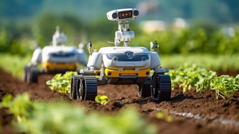

ROBÔS DE PLANTIO

Utilizados para semear de forma precisa, garantindo espaçamento uniforme e otimização do uso de sementes.
ROBÔS DE COLHEITA

Projetados para colher frutas e vegetais, muitas vezes utilizando visão computacional para identificar produtos maduros.
ROBÔS DE PULVERIZAÇÃO

Equipados com sensores para detectar pragas e aplicar pesticidas ou herbicidas de forma localizada.
ROBÔS DE MONITORAMENTO

Utilizam drones e veículos terrestres para coletar dados sobre plantas, solo e clima, ajudando na tomada de decisões agrícolas.